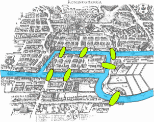
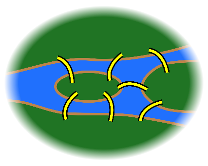
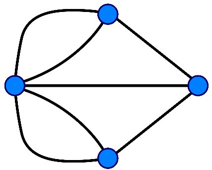

Lucrarea scrisă de Leonhard Euler pe cele Șapte Poduri din Königsberg și publicată în 1736 este considerată prima lucrare din istoria teoriei graficelor.
Această lucrare, precum și cea scrisă de Vandermonde despre problema cavalerilor, au continuat cu analiza situs inițiată de Leibniz.
Formula lui Euler referitoare la numărul de muchii, vârfuri și fețe ale unui poliedru convex a fost studiată și generalizată de Cauchy și L'Huilier, și reprezintă începutul ramurii matematicii cunoscută sub numele de topologie, o extensie a geometriei care studiază deformările spațiului prin transformări continue.
Cele șapte poduri din Königsberg este o problemă istorică notabilă în matematică.
Orașul Königsberg din Prusia (în prezent Kaliningrad, Rusia) a fost așezat pe ambele maluri ale râului Pregel și a inclus două mari insule (Kneiphof și Lomse) care erau conectate între ele sau cu cele două porțiuni continentale ale orașului, prin șapte poduri.
Problema a fost de a concepe o plimbare prin oraș care să traverseze fiecare dintre acele poduri o singură dată.

→

→

În limbajul modern, Euler arată că posibilitatea unei plimbări printr-un grafic, care traversează fiecare margine exact o dată, depinde de gradele nodurilor, numărul de margini care îl ating.
Argumentul lui Euler arată că o condiție necesară pentru forma dorită este ca graficul să fie conectat și să aibă exact zero sau două noduri de grad impar.
Această condiție se dovedește, de asemenea, suficientă (un rezultat afirmat de Euler și dovedit ulterior de Carl Hierholzer).
O astfel de plimbare este acum numită o cale euleriană sau plimbare Euler în onoarea sa.
Mai mult, dacă există noduri de grad impar, atunci orice cale euleriană va începe la unul dintre ele și se va termina la cealaltă.
Deoarece graficul corespunzător istoricului Königsberg are patru noduri de grad impar, nu poate avea o cale euleriană.